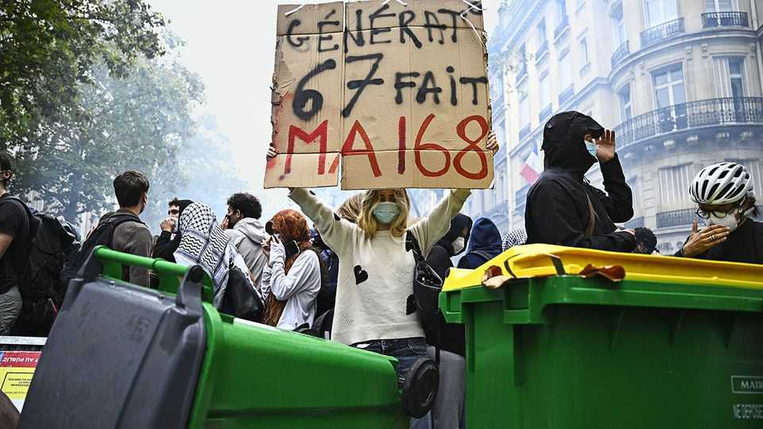

Arson at the school gate and tear gas on the streets
French pupils are angry and the country is tense

Oct 8th 2026
“The budget for the army is increasing, but not for education,” complains a university student. She is out on the streets of Paris on October 6th to support a one-day demonstration which drew at least 250,000 people across France. A pupil marching in the bright autumn sunshine says teachers’ absences in the year of her baccalauréat, the high-school leaving exam, are causing her stress. Another student says that “everyone is just really fed up,” and hopes the protests will topple the government. Yet another is worried about “the rise of the extreme right”.
The initial mood at the manif, or demo, was as cheerful as the student demands were varied. Food trucks offered sizzling grilled kebabs. Drums were beaten; banners were witty. But a heavy police presence, including riot police equipped with tear gas and non-lethal flashball guns, was a sign the authorities feared a mêlée. “The casseurs [rioters] have turned up just to cause trouble, and undermine our credibility,” lamented a secondary-school pupil. By day’s end, after violent clashes with the police, 488 people had been arrested.
France’s student protests, which broke out at a school in Créteil outside Paris in mid-September, have spread to over a quarter of the country’s 3,700 lycées, or upper-secondary schools. The country is no stranger to student demonstrations. Successive governments are haunted by folk memories both of 1968 and of more recent movements that spread fast and were difficult to control. The current ones turned violent particularly rapidly, spurred by images on social media. The entrance hall at the Lycée Nelson Mandela in the western city of Nantes was set alight. A 15-year-old lost a hand when a stun grenade was deployed by the police in the northern city of Lens. By October 7th, 6,629 people had been arrested countrywide; 215 pupils had been wounded, as well as 89 school staff and 761 police officers.
Some of the pupils’ grievances are fair. Protesters point to heavy timetables and long school days, following the reform of the bac a few years ago, as well as dilapidated buildings. Education spending per secondary pupil has been flat in real terms over the past decade; despite a recent boost, teachers’ salaries are below the average among rich countries, with scant space to raise them. The country is under pressure from the bond markets; the government is squeezing spending in its budget for 2027 in an attempt to control the deficit, which will reach 5.4% of GDP this year. This includes a cut of 1,588 teaching posts, due to declining pupil numbers. Only defence spending has been ring-fenced.
The government, however, accuses politicians from Jean-Luc Mélenchon’s populist-left Unsubmissive France (LFI) of exploiting the protests. Mr Mélenchon, who received an enthusiastic welcome at the demo in the capital, called it “absurd” to claim that his party was behind the violence and accused the government of ordering a “crackdown”. Laurent Nuñez, the interior minister, said on October 7th that he was suspending the police’s use of stun grenades. But in parliament the previous day Sébastien Lecornu, the centrist prime minister, angrily called accusations of police repression “a lie”. He blamed LFI politicians for seeking “to organise chaos for electoral ends”.
The underlying difficulty is that France is six months from a presidential election. The mood is tense, and politics is as likely to play out in the streets as in the parliamentary debating chamber. For the populist left, it is a chance to flex its muscles and show support for students; young people are particularly keen on Mr Mélenchon, a revolutionary firebrand. He is running for president and polls suggest he could make it into the run-off against Marine Le Pen of the nationalist-right National Rally.
For Ms Le Pen, the favourite in the polls, it is a chance to blame the government for failing to ensure public order and to accuse the hard left of “conflictualising” the situation. Although 85% of those arrested are under the age of 18, hundreds of adult casseurs have also taken part. Ms Le Pen wants tougher anti-riot legislation.
In the short run the school protests could die down, perhaps when the autumn half-term holiday begins in mid-October. Some schools are already beginning to pick up the pieces. Outside a lycée in south-west Paris, where students last week set fire to sacks of rubbish and wooden crates, the charred remains of burnt rental bikes have been piled up neatly on the pavement behind a police barrier.
But the discontent is unlikely to dissipate. After nearly ten years under the centrist Emmanuel Macron, the country wants change. Family budgets are tight. Petrol prices are high. And the public is anxious: a poll finds only 10% are confident in their economic future. In a febrile France, anger and frustration could readily spill over into more unrest before next year’s vote. ■